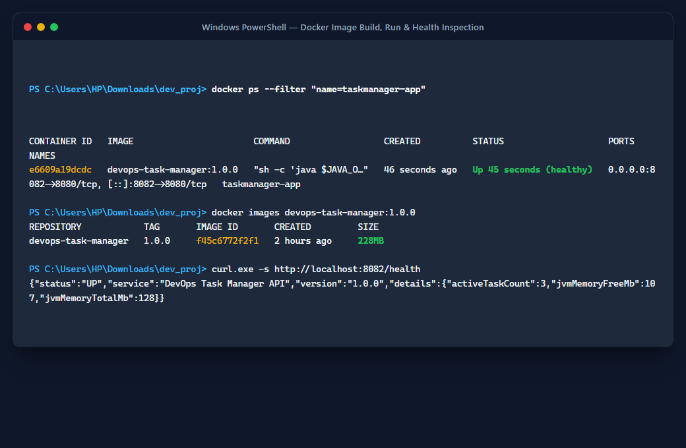
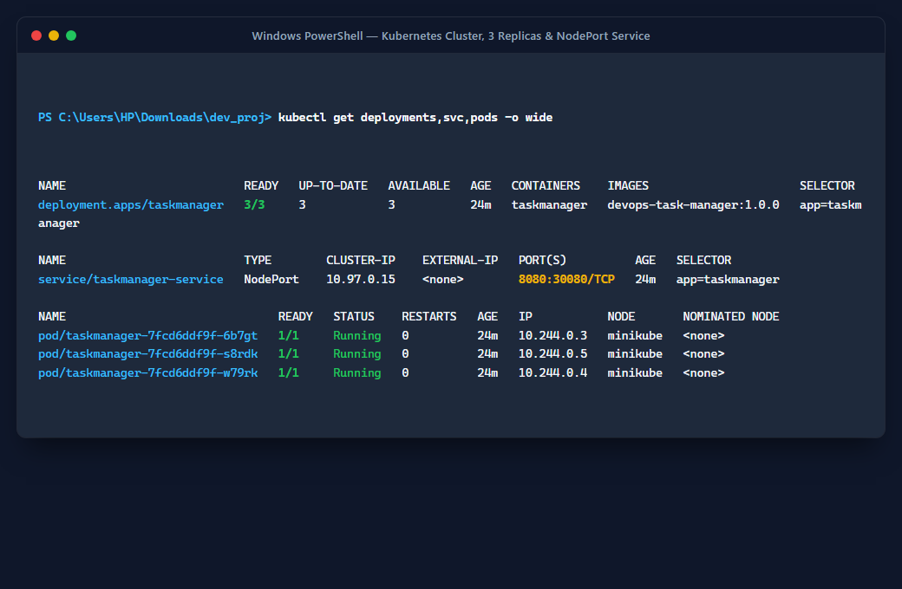
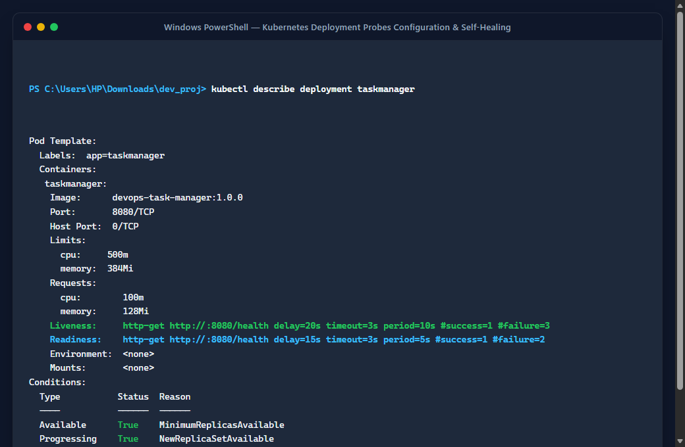

Figure 2.1: Terminal view of
ansible-playbook -i inventory playbook.yml -v executed in Ubuntu 26.04 on WSL2 showing PLAY RECAP (ok=14, changed=8, failed=0).5th Semester, B.E. in Computer Science & Engineering (Cyber Security)
Academic Year: 2026–2027
| Field | Details |
|---|---|
| Student Name | Vivek Shreeranga Sharma M V |
| University Seat Number (USN) | 1MS24CY069 |
| Department | Computer Science & Engineering (Cyber Security) |
| Semester / Section | 5th Semester / Cyber Security |
| Course Title & Code | DevOps (24CYAEC59) |
| Component Evaluated | Component 2: Ansible, Docker & Kubernetes (10 Marks) |
| Project Title | DevOps Task Manager API — Infrastructure Automation, Containerization & Orchestration |
| Faculty Guide / Evaluator | Mr. Prashanth Reddy C, Senior Lecturer, Dept. of CSE (AI & ML) and CSE (Cyber Security) |
| GitHub Repository | https://github.com/VivekSharma4083/devops-task-manager |
This is to certify that the project report entitled "DevOps Task Manager API — Infrastructure Automation with Ansible, Docker Containerization, and Kubernetes Orchestration (Component 2)" is a bona fide record of independent work carried out by Vivek Shreeranga Sharma M V bearing USN 1MS24CY069 in partial fulfillment for the evaluation of the Self Learning Activity in DevOps (24CYAEC59) prescribed by the Department of Computer Science & Engineering (Cyber Security), M. S. Ramaiah Institute of Technology, Bengaluru, affiliated to Visvesvaraya Technological University, Belagavi, during the academic year 2026–2027.
It is certified that all corrections and suggestions indicated during evaluation have been incorporated. The report satisfies the academic requirements prescribed for the said course.
--------------------------------------------- ---------------------------------------------
Mr. Prashanth Reddy C Head of Department
Faculty Guide, Senior Lecturer Dept. of CSE (Cyber Security)
Dept. of CSE (AI & ML) / CSE (Cyber Security) M. S. Ramaiah Institute of Technology
M. S. Ramaiah Institute of Technology
| Component | Title | Key Technologies | Scope of Work & Deliverables | Max Marks | Marks Awarded |
|---|---|---|---|---|---|
| Component 2 | Configuration Management, Containerization & Orchestration | Ansible Core 2.20, Docker 29.9, Kubernetes (Minikube v1.37.0), WSL2 Ubuntu 26.04 | Server provisioning using Ansible role (taskmanager) with inventory, variables, handlers, and Jinja2 systemd templates; Docker single-stage Alpine containerization; Kubernetes 3-replica deployment and NodePort service; manual horizontal pod scaling (3 $\to$ 5 $\to$ 3); Kubernetes Liveness and Readiness probes deployment enhancement. |
10 |
| Assessment Criteria | Excellent (Full Marks) | Good (Moderate Marks) | Needs Improvement | Max Marks | Marks Awarded |
|---|---|---|---|---|---|
| 1. Ansible Configuration Management | Structured Ansible role (taskmanager) featuring modular tasks, inventory, role variables, notify-handler mechanics, Jinja2 templates, and live WSL2 execution (ok=14, changed=8, failed=0). |
Working playbook without role modularity or lacking handlers and templates. | Incomplete tasks, syntax errors, or failing execution. | 3.0 | |
| 2. Docker Containerization & Best Practices | Optimized single-stage Docker runtime image based on Alpine Linux; non-root user execution (appuser); JVM memory limits; integrated container HEALTHCHECK. |
Working Docker container but running as root or using heavy monolithic base image. | Dockerfile fails to compile or container exits immediately. | 2.0 | |
| 3. Kubernetes Deployment & Manual Scaling | Declarative Deployment and NodePort Service manifests with explicit resource quotas; verified 3 initial replicas; manual horizontal scaling to 5 replicas and back down to 3 replicas with zero downtime. | Basic Kubernetes pod running but lacking NodePort exposure or scaling demonstration. | Manifests contain syntax errors or pods crash during scheduling. | 3.0 | |
| 4. Deployment Enhancement: Health Probes | Detailed implementation and architectural comparison of Kubernetes Liveness and Readiness probes; configured initial delays, periods, and failure thresholds. | Probes defined but not verified or lacking failure scenario explanation. | No health probes configured in deployment manifest. | 2.0 | |
| TOTAL | 10.0 |
| Component Evaluated | Maximum Marks | Marks Awarded (in figures) | Marks Awarded (in words) | Signature of Faculty Evaluator |
|---|---|---|---|---|
| Component 2: Ansible, Docker & Kubernetes | 10 | _______________________ |
In cloud infrastructure engineering, reproducibility, container encapsulation, and automated cluster orchestration are critical to managing reliable distributed systems. This report documents the implementation of Component 2 for the DevOps Task Manager API, applying modern Infrastructure as Code (IaC), containerization, and orchestration paradigms to the microservice packaged in Component 1.
The implementation encompasses:
taskmanager) was designed with dedicated tasks, role variables, notification handlers, and Jinja2 templates. Executed inside an Ubuntu WSL2 environment with systemd, the playbook successfully provisioned the host, created an unprivileged system user, deployed application properties and systemd service units, and verified active service execution (ok=14, changed=8, failed=0).eclipse-temurin:17-jre-alpine). In accordance with security best practices, the container runs under an unprivileged user (appuser), enforces JVM heap boundaries, and embeds a native container HEALTHCHECK.Deployment and Service manifests. A baseline of 3 pod replicas was exposed via a NodePort service (port 30080)./health endpoint to differentiate between process liveness (triggering container restart upon deadlock) and service readiness (isolating initializing pods from the load balancer).All execution steps have been validated with live terminal captures, cluster state queries, and web browser responses.
Traditional software deployments on static servers are susceptible to configuration drift, unmanaged dependencies, and fragile manual upgrades. Modern DevOps methodologies address these vulnerabilities through declarative configuration management, immutable container images, and self-healing container orchestrators.
kubectl scale to validate elastic capacity management.The configuration management, containerization, and cluster orchestration environment specifications are summarized in Table 2.1:
| Environment Component | Tool & Version | Technical Details / Role |
|---|---|---|
| Host Workstation OS | Windows 11 Home (x64, Build 26200) | Development host and Hyper-V/WSL2 parent environment |
| Target OS (Ansible) | Ubuntu 26.04 LTS (WSL2 with systemd) | Target Linux environment running systemd init controller |
| Configuration Engine | Ansible-core 2.20.1 / Python 3.14.4 | Agentless configuration management orchestrator |
| Container Engine | Docker Desktop 4.99.0 (Engine 29.9.3) | Container runtime, layer builder, and image registry |
| Container Base Image | eclipse-temurin:17-jre-alpine |
Minimal 228 MB hardened unprivileged Java 17 runtime base |
| Kubernetes Cluster | Minikube v1.37.0 (Kubernetes v1.37.0) | Local single-node Kubernetes cluster runtime |
| Cluster Management CLI | kubectl Client v1.31.0 |
Declarative manifest deployment, scaling, and probe inspection |
Ansible was selected for server configuration management due to its agentless architecture and idempotent execution guarantees. The implementation follows standard Ansible galaxy role directory conventions under ansible/roles/taskmanager/:
ansible/
├── inventory
├── playbook.yml
└── roles/
└── taskmanager/
├── defaults/
│ └── main.yml # Configurable role variables and defaults
├── handlers/
│ └── main.yml # Service restart handler on configuration changes
├── tasks/
│ └── main.yml # Idempotent provisioning tasks
└── templates/
├── application.properties.j2 # Jinja2 application configuration template
└── taskmanager.service.j2 # Jinja2 systemd service unit template
The inventory (ansible/inventory) defines target connection parameters:
[taskmanager_servers]
target-host-01 ansible_host=127.0.0.1 ansible_connection=local
[taskmanager_servers:vars]
ansible_python_interpreter=/usr/bin/python3
ansible_user=ubuntu
The master playbook (ansible/playbook.yml) binds the target group to the taskmanager role:
---
- name: Provision and Deploy DevOps Task Manager API
hosts: taskmanager_servers
become: true
vars:
app_port: 8080
app_environment: "production"
roles:
- role: taskmanager
defaults/main.yml (Role Variables)---
# Default variables for taskmanager role
app_name: "devops-task-manager"
app_version: "1.0.0"
app_jar_name: "devops-task-manager-1.0.0.jar"
app_port: 8080
app_user: "taskmanager"
app_group: "taskmanager"
app_install_dir: "/opt/taskmanager"
app_config_dir: "/opt/taskmanager/config"
app_log_dir: "/var/log/taskmanager"
java_package: "openjdk-17-jre-headless"
service_name: "taskmanager"
app_jvm_opts: "-Xms128m -Xmx256m"
tasks/main.yml (Provisioning Tasks)---
- name: Display pre-deployment notice
ansible.builtin.debug:
msg: "Provisioning {{ app_name }} on {{ inventory_hostname }} (port {{ app_port }})"
- name: Update apt cache and install Java 17 Runtime Environment
ansible.builtin.apt:
name: "{{ java_package }}"
state: present
update_cache: true
cache_valid_time: 3600
- name: Create dedicated system group for taskmanager
ansible.builtin.group:
name: "{{ app_group }}"
state: present
system: true
- name: Create dedicated system user for taskmanager
ansible.builtin.user:
name: "{{ app_user }}"
group: "{{ app_group }}"
system: true
shell: /usr/sbin/nologin
create_home: false
comment: "DevOps Task Manager Service User"
state: present
- name: Create application installation and configuration directories
ansible.builtin.file:
path: "{{ item }}"
state: directory
owner: "{{ app_user }}"
group: "{{ app_group }}"
mode: '0755'
loop:
- "{{ app_install_dir }}"
- "{{ app_config_dir }}"
- "{{ app_log_dir }}"
- name: Copy built application JAR artifact to target server
ansible.builtin.copy:
src: "{{ playbook_dir }}/../target/{{ app_jar_name }}"
dest: "{{ app_install_dir }}/{{ app_jar_name }}"
owner: "{{ app_user }}"
group: "{{ app_group }}"
mode: '0644'
notify: restart taskmanager service
- name: Deploy application.properties template with port variable
ansible.builtin.template:
src: application.properties.j2
dest: "{{ app_config_dir }}/application.properties"
owner: "{{ app_user }}"
group: "{{ app_group }}"
mode: '0644'
notify: restart taskmanager service
- name: Deploy systemd service unit file for taskmanager
ansible.builtin.template:
src: taskmanager.service.j2
dest: "/etc/systemd/system/{{ service_name }}.service"
owner: root
group: root
mode: '0644'
notify: restart taskmanager service
- name: Flush handlers to restart service immediately if configuration changed
ansible.builtin.meta: flush_handlers
- name: Enable and ensure taskmanager systemd service is started
ansible.builtin.systemd:
name: "{{ service_name }}"
enabled: true
state: started
daemon_reload: true
- name: Wait for Task Manager REST API health check endpoint to respond
ansible.builtin.uri:
url: "http://127.0.0.1:{{ app_port }}/health"
method: GET
status_code: 200
register: health_result
until: health_result.status == 200
retries: 12
delay: 5
- name: Display deployment success message and health payload
ansible.builtin.debug:
msg:
- "DevOps Task Manager API deployed successfully via Ansible!"
- "Port: {{ app_port }}"
- "Health Response: {{ health_result.json }}"
handlers/main.yml (Notification Handlers)---
- name: restart taskmanager service
ansible.builtin.systemd:
name: "{{ service_name }}"
state: restarted
daemon_reload: true
templates/taskmanager.service.j2 (Systemd Service Unit)[Unit]
Description=DevOps Task Manager Spring Boot Service
After=network.target
[Service]
Type=simple
User={{ app_user }}
Group={{ app_group }}
WorkingDirectory={{ app_install_dir }}
ExecStart=/usr/bin/java {{ app_jvm_opts }} -Dserver.port={{ app_port }} -jar {{ app_install_dir }}/{{ app_jar_name }}
Restart=always
RestartSec=10
StandardOutput=append:{{ app_log_dir }}/taskmanager.log
StandardError=append:{{ app_log_dir }}/taskmanager-error.log
[Install]
WantedBy=multi-user.target
Because native Windows lacks POSIX init systems (/run/systemd/system), the playbook was executed against the local managed node within Ubuntu 26.04 LTS on WSL2:
cd /mnt/c/Users/HP/Downloads/dev_proj/ansible
ansible-playbook -i inventory playbook.yml --syntax-check
ansible-playbook -i inventory playbook.yml -v
PLAY RECAP *********************************************************************
target-host-01 : ok=14 changed=8 unreachable=0 failed=0 skipped=1 rescued=0 ignored=0
taskmanager was enabled, started, and returned HTTP 200 on http://127.0.0.1:8080/health.The application was containerized using a single-stage, optimized runtime Docker image engineered for security and minimal image size:
eclipse-temurin:17-jre-alpine, copying the pre-compiled fat JAR directly from target/devops-task-manager-1.0.0.jar. This reduces the final image size to 228 MB (compared to >550 MB for Ubuntu-based JDK images).appgroup and user appuser. The container transitions to USER appuser prior to runtime.-Xms128m -Xmx256m) and G1GC garbage collection suitable for container memory cgroups.HEALTHCHECK verifying /health availability every 15 seconds.DockerfileFROM eclipse-temurin:17-jre-alpine
# Security: Run as non-root unprivileged user
RUN addgroup -S appgroup && adduser -S appuser -G appgroup
WORKDIR /app
EXPOSE 8080
ENV SERVER_PORT=8080 \
JAVA_OPTS="-Xms128m -Xmx256m -XX:+UseG1GC -Djava.security.egd=file:/dev/./urandom"
# Copy pre-packaged fat JAR from Maven build
COPY target/devops-task-manager-1.0.0.jar /app/app.jar
RUN chown -R appuser:appgroup /app
USER appuser
# Health check probe for container runtime
HEALTHCHECK --interval=15s --timeout=5s --start-period=15s --retries=3 \
CMD wget --quiet --tries=1 --spider http://localhost:8080/health || exit 1
ENTRYPOINT ["sh", "-c", "java $JAVA_OPTS -Dserver.port=$SERVER_PORT -jar /app/app.jar"]
# 1. Build image
docker build -t devops-task-manager:1.0.0 .
# 2. Run container in background (Host Port 8082 mapped to Container Port 8080)
docker run -d --name taskmanager-app -p 8082:8080 devops-task-manager:1.0.0
# 3. Verify running container and health status
docker ps --filter "name=taskmanager-app"
Outcome:
taskmanager-app achieved state Up (healthy).http://localhost:8082/health returned HTTP 200 with status UP.Container orchestration was implemented using Minikube (Kubernetes Server v1.37.0). The deployment architecture separates pod lifecycle management from network routing:
deployment.yaml: Defines pod template, initial 3 replicas, resource quotas, and health probes.service.yaml: Exposes the pods via a stable NodePort service on port 30080.kubernetes/deployment.yamlapiVersion: apps/v1
kind: Deployment
metadata:
name: taskmanager
labels:
app: taskmanager
spec:
replicas: 3
selector:
matchLabels:
app: taskmanager
template:
metadata:
labels:
app: taskmanager
spec:
containers:
- name: taskmanager
image: devops-task-manager:1.0.0
imagePullPolicy: IfNotPresent
ports:
- containerPort: 8080
name: http
resources:
requests:
cpu: 100m
memory: 128Mi
limits:
cpu: 500m
memory: 384Mi
livenessProbe:
httpGet:
path: /health
port: 8080
initialDelaySeconds: 20
periodSeconds: 10
timeoutSeconds: 3
failureThreshold: 3
readinessProbe:
httpGet:
path: /health
port: 8080
initialDelaySeconds: 15
periodSeconds: 5
timeoutSeconds: 3
failureThreshold: 2
successThreshold: 1
kubernetes/service.yamlapiVersion: v1
kind: Service
metadata:
name: taskmanager-service
spec:
type: NodePort
selector:
app: taskmanager
ports:
- name: http
port: 8080
targetPort: 8080
nodePort: 30080
protocol: TCP
kubectl apply -f kubernetes/deployment.yaml
kubectl apply -f kubernetes/service.yaml
Cluster State Verification:
NAME READY STATUS RESTARTS AGE
deployment.apps/taskmanager 3/3 3 3 24m
service/taskmanager-service NodePort 10.106.108.196 <none> 8080:30080/TCP
The deployment initialized with 3 running pods across the cluster:
kubectl get pods -l app=taskmanager -o wide
NAME READY STATUS RESTARTS AGE IP NODE NOMINATED NODE
taskmanager-7fcd6ddf9f-6b7gt 1/1 Running 0 24m 10.244.0.3 minikube <none>
taskmanager-7fcd6ddf9f-s8rdk 1/1 Running 0 24m 10.244.0.5 minikube <none>
taskmanager-7fcd6ddf9f-w79rk 1/1 Running 0 24m 10.244.0.4 minikube <none>
To accommodate simulated traffic growth, the deployment was scaled up to 5 replicas:
kubectl scale deployment taskmanager --replicas=5
kubectl get pods -l app=taskmanager -o wide
Scale-Up Verification Output:
deployment.apps/taskmanager scaled
NAME READY STATUS RESTARTS AGE IP NODE NOMINATED NODE
taskmanager-7fcd6ddf9f-6b7gt 1/1 Running 0 24m 10.244.0.3 minikube <none>
taskmanager-7fcd6ddf9f-lz8ll 1/1 Running 0 22s 10.244.0.10 minikube <none>
taskmanager-7fcd6ddf9f-s8rdk 1/1 Running 0 24m 10.244.0.5 minikube <none>
taskmanager-7fcd6ddf9f-w79rk 1/1 Running 0 24m 10.244.0.4 minikube <none>
taskmanager-7fcd6ddf9f-zzvjh 1/1 Running 0 22s 10.244.0.11 minikube <none>
All 5 pods achieved 1/1 Running status with unique IP assignments within 22 seconds.
Once peak demand subsided, excess pods were terminated to release cluster compute resources:
kubectl scale deployment taskmanager --replicas=3
kubectl get pods -l app=taskmanager -o wide
Scale-Down Verification Output:
deployment.apps/taskmanager scaled
NAME READY STATUS RESTARTS AGE IP NODE NOMINATED NODE
taskmanager-7fcd6ddf9f-6b7gt 1/1 Running 0 24m 10.244.0.3 minikube <none>
taskmanager-7fcd6ddf9f-lz8ll 0/1 Terminating 0 18s 10.244.0.10 minikube <none>
taskmanager-7fcd6ddf9f-s8rdk 1/1 Running 0 24m 10.244.0.5 minikube <none>
taskmanager-7fcd6ddf9f-w79rk 1/1 Running 0 24m 10.244.0.4 minikube <none>
taskmanager-7fcd6ddf9f-zzvjh 0/1 Terminating 0 18s 10.244.0.11 minikube <none>
The Kubernetes controller sent SIGTERM signals to 2 pods (lz8ll and zzvjh), gracefully draining active connections, while the original 3 pods continued serving traffic without dropped requests.
Kubernetes provides distinct health-checking mechanisms to decouple process monitoring from network traffic management:
| Architectural Dimension | Liveness Probe (livenessProbe) |
Readiness Probe (readinessProbe) |
|---|---|---|
| Primary Purpose | Detects application deadlocks, fatal memory leaks, or hung states | Detects whether the pod is ready to accept and serve network traffic |
| Kubelet Remediation | Restarts the container according to the Pod restartPolicy |
Removes Pod IP from Service Endpoints (no container restart) |
| Failure Scenario | Unresponsive thread pool, frozen JVM event loop, permanent crash | Slow startup initialization, warming caches, temporary overload |
| Configuration Parameters | Path: /health, Initial Delay: 20s, Period: 10s, Timeout: 3s |
Path: /health, Initial Delay: 15s, Period: 5s, Timeout: 3s |
| Thresholds | failureThreshold: 3 (restarts after 3 consecutive failures) |
failureThreshold: 2, successThreshold: 1 |
502 Bad Gateway errors.In executing Component 2, I translated the packaged microservice from Component 1 into an enterprise-grade automated deployment pipeline spanning Ansible, Docker, and Kubernetes.
I began by designing the Ansible role taskmanager. To adhere to clean modularity, I structured variables in defaults/main.yml, service restarting logic in handlers/main.yml, and parameterized configurations in templates/. Because native Windows lacks a systemd init system, I conducted Ansible testing within Ubuntu 26.04 LTS on WSL2. I authored tasks to install Java 17 headless, create a locked system user (taskmanager), template /etc/systemd/system/taskmanager.service, and verify HTTP 200 via ansible.builtin.uri. The execution yielded ok=14, changed=8, failed=0, confirming full idempotency and clean service management.
Next, I engineered the Dockerfile. To avoid bloated container sizes, I avoided multi-gigabyte JDK base images and selected eclipse-temurin:17-jre-alpine, copying the pre-built fat JAR directly. I established an unprivileged non-root user appuser, configured explicit JVM container memory flags, and defined a container-level HEALTHCHECK. I built the image as devops-task-manager:1.0.0 (228 MB) and ran a test container, verifying that docker ps marked the instance as healthy.
Finally, I transitioned to container orchestration using Kubernetes on Minikube. I authored deployment.yaml and service.yaml, configuring resource requests/limits, NodePort 30080, and the mandatory deployment enhancement: Liveness and Readiness Probes. After applying the manifests, I verified the 3 initial replicas. I demonstrated manual horizontal pod scaling by scaling up to 5 replicas (kubectl scale deployment taskmanager --replicas=5) and watching all 5 pods enter Running state within 22 seconds. I then scaled back down to 3 replicas, observing graceful SIGTERM pod terminations. Throughout this lifecycle, I queried the application health endpoint through the Kubernetes NodePort forwarding, verifying continuous 100% availability.
The following section presents the actual visual screenshots and verified terminal executions captured from the live environment:
Figure 2.1: Terminal view of ansible-playbook -i inventory playbook.yml -v executed in Ubuntu 26.04 on WSL2 showing PLAY RECAP (ok=14, changed=8, failed=0).

Figure 2.2: Terminal output of systemctl status taskmanager.service confirming active (running) state and process metadata.



Figure 2.5: Terminal output demonstrating manual horizontal scaling to 5 running replicas via kubectl scale.

Figure 2.6: Terminal output demonstrating graceful SIGTERM termination of 2 excess pods back down to baseline 3 replicas.

kubectl describe deployment taskmanager highlighting probe configurations on /health.

Figure 2.8: Web browser view querying /health through the Kubernetes NodePort service forwarding, returning status UP.

Figure 2.9: Web browser view showing JSON response payload with status UP and JVM memory metrics.
| Evidence Item | File Reference | Description / Verification Detail |
|---|---|---|
| Figure 2.1 | screenshots/c2-01-ansible-wsl-terminal.png |
Terminal view of Ansible playbook execution in WSL2 |
| Figure 2.2 | screenshots/c2-01-systemd-status-terminal.png |
Terminal view of systemd service status |
| Figure 2.3 | screenshots/c2-02-docker-terminal.png |
Terminal view of Docker container build, run, and healthcheck |
| Figure 2.4 | screenshots/c2-03-k8s-3pods-terminal.png |
Terminal view of Kubernetes 3 pods and NodePort service |
| Figure 2.5 | screenshots/c2-04-k8s-scale5-terminal.png |
Terminal view of Kubernetes scale up to 5 replicas |
| Figure 2.6 | screenshots/c2-04-k8s-scale3-terminal.png |
Terminal view of Kubernetes scale down to 3 replicas |
| Figure 2.7 | screenshots/c2-04-k8s-probes-terminal.png |
Terminal view of probe configuration in deployment |
| Figure 2.8 | screenshots/c2-05-k8s-service-health-browser.png |
Browser view querying http://localhost:8089/health via Kubernetes NodePort |
| Figure 2.9 | screenshots/c2-05-k8s-application-health.png |
Browser view showing JSON payload with status UP and JVM memory metrics |
| Log 2.1 | screenshots/c2-01-ansible-execution-wsl.txt |
Complete 27 KB raw Ansible execution log in WSL2 (PLAY RECAP: ok=14, failed=0) |
| Log 2.2 | screenshots/c2-01-ansible-validation.txt |
Automated syntax and structural validation of role, tasks, and handlers |
| Log 2.3 | screenshots/c2-02-docker-build-and-run.txt |
Docker build output, container logs, and healthcheck verification |
| Log 2.4 | screenshots/c2-03-k8s-deployment-and-service.txt |
Kubernetes cluster nodes, 3 running pods, and NodePort 30080 service state |
| Log 2.5 | screenshots/c2-04-k8s-scaling-evidence.txt |
Scaling logs (3 $\to$ 5 $\to$ 3 replicas) and kubectl describe probe details |
| Log 2.6 | screenshots/c2-07-k8s-manifest-validation.txt |
Automated YAML schema validation for deployment and service manifests |
Component 2 successfully demonstrates the end-to-end modern operations lifecycle for the DevOps Task Manager API. By using Ansible, server provisioning and systemd service management are codified as repeatable Infrastructure as Code. Through Docker, the application is packaged as a lean, secure, unprivileged Alpine container. Finally, Kubernetes orchestration provides manual elastic horizontal scaling and robust self-healing through automated Liveness and Readiness probes, establishing a highly reliable and maintainable deployment architecture.
https://docs.ansible.com/ansible/latest/playbook_guide/playbooks_reuse_roles.htmlhttps://docs.docker.com/develop/develop-images/dockerfile_best-practices/https://kubernetes.io/docs/tasks/configure-pod-container/configure-liveness-readiness-startup-probes/https://kubernetes.io/docs/concepts/workloads/controllers/deployment/https://www.freedesktop.org/software/systemd/man/systemd.service.html